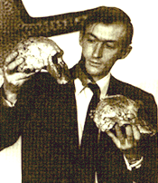

Biographies: Richard Leakey

Richard Erskine Leakey was born on December 19, 1944, the second of Louis and Mary Leakey's three sons. At an early age, he decided he wanted nothing to do with paleoanthropology, and later dropped out of high school. In the next few years, he trapped wild animals, supplied skeletons to institutions, started a safari business (observing animals, not killing them), and taught himself to fly. In 1964, he led an expedition to a fossil site he had seen from the air and discovered that he enjoyed looking for fossils. He also discovered, to his dismay, that although he had technically led the expedition, all the glory went to the scientists who studied the specimens. So in 1965, he went to England to study for a degree. He spent 6 months catching up on two years of missed high school then returned home to resume his safaris, work at the National Museum of Kenya, and manage paleontological expeditions (he never did return to get his degree). In 1966 he married an archaeologist, Margaret Cropper, who had worked with the Leakey family.After working on a French/Kenyan/American joint expedition to Omo in Ethiopia, Richard realized once again that his lack of scientific qualifications hindered his progress, so he asked the National Geographic Society for funds to run his own excavation at a site he had found near Lake Rudolf (now Lake Turkana) in Kenya. In 1968, nimble political manoeuvering led to him being appointed as the director of the National Museum of Kenya, and he commenced fossil hunting at Rudolf. The expedition was successful, finding large numbers of fossils, including hominids. The excavations continued in subsequent years, producing a steady stream of hominid fossils that dazzled the scientific world. Most spectacular were the fossils ER 1470, a Homo habilis skull found in 1972, and ER 3733, a Homo erectus skull found in 1975.
In 1969, he and his wife Margaret had a daughter, Anna, and they were divorced in the same year. The following year he married Meave Epps, a zoologist who specialized in primates. They have had two daughters, Louise in 1972, and Samira in 1974.
In 1969 he had been diagnosed with a terminal kidney disease, with a prognosis that he probably had less than 10 years to live. The condition worsened slowly, but by mid-1979 it was serious enough that Richard went to a kidney specialist in London. He was in end-stage renal failure, and would die unless he received a kidney transplant or was put on dialysis. In November he received a kidney transplant from his younger brother Philip, but a month later it started to be rejected. Drugs suppressed the rejection but weakened his immune system, and he almost died from pneumonia and pleurisy. He (and the kidney) recovered fully, and he returned to Kenya after eight months in England (during this period, he had written his autobiography One Life).
Fossil hunting expeditions continued, although on a smaller scale than in the 1970s, as Richard devoted more of his time to running Kenya's museum system. In 1984 his team found the most impressive fossil of his (or, arguably, anyone else's) career. WT 15000, nicknamed the Turkana Boy, is the nearly complete skeleton of a Homo erectus boy. The following year supplied another major find, WT 17000, the first skull of the species Australopithecus aethiopicus.
In recent years, Richard has had little to do with paleoanthropology, although he remains interested in the field. He took up conservation issues and, from 1989 to 1994, directed the Kenya Wildlife Service, where he was successful in combatting elephant and rhino poaching and overhauling Kenya's troubled park system. Political opposition caused him to resign from that position, and he started up a wildlife consultancy agency. Since then he has become involved in Kenyan politics, and was Secretary General of the Kenyan opposition party Safina. In December 1997, he was elected to an opposition seat in the Kenyan parliament.
In 1993, a crash caused by a malfunction in the airplane he was flying caused the loss of both legs below the knee.
Richard's wife Meave continues to work in paleoanthropology. In 1995, she and her team described a new hominid species, Australopithecus anamensis, and, in 2001, another new species, Kenyanthropus platyops. She may not be the last of the Leakey dynasty; their daughter Louise has managed her own paleontological digs. In 1995 she graduated with an honors degree in geology and zoology, and completed a Ph.D in paleontology in 2001.
References
Leakey R.E. (1984): One Life: an autobiography. Salem, NH: Salem House.Morell V. (1995): Ancestral passions: the Leakey family and the quest for humankind's beginnings. New York: Simon & Schuster.
Richard Leakey: Africa's passionate voice for Nature
Meave Leakey: in search of our ancestors
This page is part of the Fossil Hominids FAQ at the talk.origins Archive.
Home Page |
Species |
Fossils |
Creationism |
Reading |
References
Illustrations |
What's New |
Feedback |
Search |
Links |
Fiction
http://www.talkorigins.org/faqs/homs/rleakey.html, 08/31/2002
Copyright © Jim Foley
|| Email me